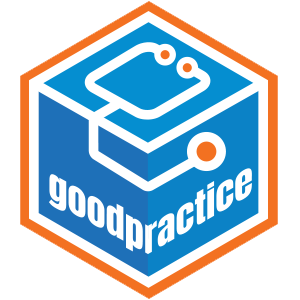

Changelog
Source:NEWS.md
goodpractice 1.0.5
CRAN release: 2024-06-04
- New maintainer: rOpenSci
- Package reinstated on CRAN, after archiving of previous version.
- CRAN fixes - skipping failing test and adding to package Rd
- Adding docs.ropensci site to DESCRIPTION
goodpractice 1.0.3
CRAN release: 2022-07-13
Additions:
- Limit for cyclomatic complexity check can be adjusted using the
goodpractice.cyclocomp.limitoption, default 50 (#132, @fabian-s). - The number of lines printed to the console by each check result can be set using the new
positions_limitparameter intoprint()- previously it was always 5 lines (#130, @fabian-s). - GitHub Actions now used for CI/CD checks (#145), as well as to calculate code coverage with {covr} and build the package site with {pkgdown}.
Bugfixes: